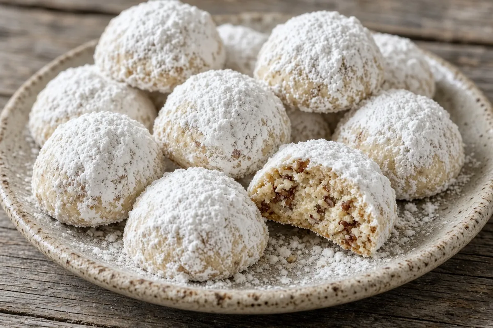

Mexican Wedding Cookies
Tender pecan butter cookies rolled twice in powdered sugar for a snowy white finish. Toasting the pecans brings out their rich flavor.

36 slices
By
Yield: About 36 cookies
Prep:
Cook:
Chilling and cooling: about 1 hour, included below
Total:
Difficulty: Easy
Ingredients
- 1 cup (2 sticks) salted butter, softened
- 1/2 cup powdered sugar
- 1 1/2 cups powdered sugar, for rolling
- 2 tsp vanilla extract
- 2 1/4 cups all-purpose flour
- 1/4 tsp kosher salt
- 1 cup pecans, toasted and finely chopped
Instructions
- Toast the pecans in a dry HexClad pan over medium heat, stirring, until fragrant, 5 minutes. Cool 5 minutes, then chop finely.
- Beat the butter, 1/2 cup powdered sugar, and vanilla until light and fluffy, 3 minutes.
- Mix in the flour and salt on low just until combined, 1 minute, then stir in the pecans.
- Chill the dough 30 minutes; heat the oven to 350°F while it chills.
- Roll into 1-inch balls and set 1 inch apart on parchment-lined sheet pans, 10 minutes.
- Bake 12 to 14 minutes, until the bottoms are lightly golden and tops still pale.
- Cool on the pan 5 minutes, then roll in the rolling powdered sugar while warm, 5 minutes.
- Cool completely on a rack, 20 minutes, then roll a second time for a clean snowy coat.
Notes: Keeps 1 week airtight at room temperature, or freeze up to 3 months before the second sugar roll. The warm first roll builds a base; the cool second roll gives the bright white finish. Toasting the pecans is the flavor.